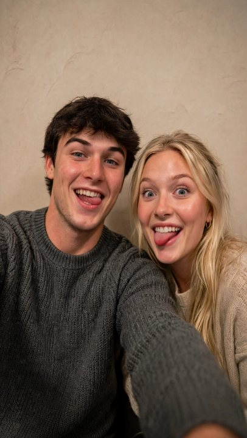

At least I'm not a bad person, Gerald thought, most nights, the way other men might check a lock or count their change. He was fifty-four years old and had not done much with the years, not in any way he could point to on paper, not in a way that would make a resume interesting or a eulogy long. He drove parts delivery for an HVAC supplier on the industrial side of town, six days a week some months, and had done that job for eleven years, a length of time he had once, with real conviction, believed was temporary. He was not an unintelligent man. He read. He kept a truck clean. He simply hadn't been given much, and had, over time, made a kind of peace with that by keeping one ledger balanced even when nothing else was: he paid his bills, he didn't cheat anyone, he called his mother on Sundays before she died and kept calling the number for a while after out of habit before he made himself stop. At least I'm not a bad person. It was not much of an accomplishment, some nights, lying there totaling it up. It was also, some nights, the only one he had.
It happened on the frontage road by the outlet mall, three cars back from the light. A silver Charger cut across two lanes without a signal, close enough that Gerald had to brake hard enough to feel it in his neck, and the kid behind the wheel never looked over. Never knew Gerald existed. It was the kind of thing that happens to somebody fifty times a day and is forgotten by the next intersection, if you have a life sized normally enough to forget things in.
Gerald did not forget it. Whoever that kid was, he had never had to ask for anything in his life. Gerald, in fifty-four years, had never once been given that.
Finding him took less effort than Gerald expected, which bothered him more than he let himself examine. A dash cam clip he'd saved off his own dashboard, a partial plate, forty minutes on a public records site that exists for exactly this kind of thing and pretends it doesn't. Tyler Voss. Twenty-one. Played baseball at a college a few states over, some infield position Gerald never bothered learning the name of, a scholarship his parents topped off the rest of. There was a girlfriend in most of the photos, blond, laughing at something just off camera, always. There was a house on the good side of town with two clean cars in the driveway and a basketball hoop nobody used.
Gerald looked at the pictures more nights than he'd have admitted to anyone. Not out of hatred, exactly. Hatred would have been simpler. It was closer to arithmetic, a long column of numbers he kept adding up and getting a total he didn't like, and going back through the column again to see where the mistake was, and not finding one.
He told himself, in this period, that he only wanted to scare him. He believes, even now, that this was true at the time he believed it.
He spent three weeks doing nothing but watching. He learned the boy's schedule the way you'd learn a bus route: gym at six most mornings, class at nine, the girlfriend's car in his driveway on Tuesday and Thursday nights, gone by eleven. He learned which stairwell in the gym's parking structure had a burnt-out light and which one had a camera that had been broken since before Gerald ever started looking. None of this felt, to him, like the beginning of anything. It felt like information. He was a man who liked having information. He had simply never before had a reason to gather this particular kind.
He bought a jacket for the occasion, plain, nothing that would be remembered, and he bought it in cash at a store forty minutes from where he lived, and told himself this too was just information-gathering, just being careful, a reasonable man taking reasonable precautions for a thing that was still, in his head, mostly hypothetical.
He went on a Tuesday, 5:50 in the morning, in the gym's stairwell with the broken camera, before the sun was up and before anyone else's car was in the lot. He had practiced in his garage with the lights off, the angle, the follow-through, the specific amount of force required low on the back to take away what he wanted taken away, because whatever else was true about what he was becoming, he wanted this on the record, even if the only person keeping the record was himself: he was not going to kill anyone. He was careful about that. He thought of it, in the weeks leading up, as a kind of restraint he was proud of.
Tyler came out of the stairwell already looking at his phone, the loose, unguarded walk of a person who has never once needed to check an empty lot before crossing it. Gerald came from the side he'd been standing on for eleven minutes. The first swing was already committed before Tyler turned his head, aimed low, across the small of the back, and after that it was mostly sound, a short, ugly, wet-sounding crack that Gerald would hear at low volume for the rest of his life, under other sounds, the way a room sometimes hums after a light gets turned off in it. Tyler went down loud. Gerald hit the same spot a second time, to be sure, and then he was walking, not running, out the far stairwell, the bat already back in the gym bag, his heart rate, he would think about this part later, with a kind of horror at himself that arrived late and left early, not far above what it would have been on an ordinary walk to his car.
He read, three days later, that the damage was permanent. The spinal cord, not just bone. Tyler Voss would not walk again.

A work of fiction. These images are AI-generated; the person shown does not exist, and any resemblance to a real individual is coincidental.
Gerald had wanted him to limp. For years, maybe, as a kind of tuition. He got something considerably larger than what he thought he'd ordered, and for a while he told himself that wasn't really his fault, that precision, at that speed, in the dark, was never guaranteed, and a man can only be responsible for his intentions.
A month later, on a Sunday, he drove past the house. He told himself the whole way there that he wasn't going to.
The two clean cars were gone. In their place was a van, the kind with a lowered floor and a ramp built into the side door, parked at an angle that suggested whoever drove it was still learning its width. Along the front steps, where there used to just be steps, somebody had built a wooden ramp, new lumber, not yet weathered, switchbacking up to the door at a careful, code-compliant grade. Gerald recognized, in the joinery, the work of a father doing this on a weekend with a level and a tape measure and no real understanding yet of how long they'd be using it.
He parked two houses down and left the engine running for eleven minutes.
He did not see Tyler. He didn't need to. The ramp told him everything it needed to: a family rebuilding the entire architecture of their lives around a fact they hadn't chosen and couldn't undo, quietly, the way you rebuild around a flood, without asking anyone's permission.
Gerald cried in his car on that quiet street, both hands still on the wheel, ugly and silent, and he did not fully know, even as it was happening, whether he was crying for the boy or for himself, and some part of him suspected, correctly, that it didn't actually matter which, the tears would be spent either way, and nothing about the ramp would be undone by them. At least I'm not a bad person, he thought, right there, crying, and did not know anymore if he believed it or was only saying it, the way you say a word too many times until it stops meaning what it used to. He drove home before anyone could notice a stranger crying outside their house.
That night he made himself dinner. The same dinner he always made on Sundays. He ate it in the same order he always did, protein first, then the vegetable, the starch last, a habit from a diet he'd tried and abandoned years ago that had simply never stopped being how he ate.
Somewhere around the third bite, he found himself thinking about the Charger again. Two lanes, no signal, the brake pedal hard enough that his neck ached for two days after. The kid hadn't even looked over. That detail kept surfacing, unbidden, disproportionate to everything else in his memory of that day, not the fear of the near miss, just the specific, total absence of acknowledgment. As though Gerald, and the eleven years, and the parts truck, and everything else that had never once broken his way, weren't real enough to warrant a glance in a mirror.
He ate another bite. He thought, briefly, about the ramp, and felt something in his chest twist the way it had in the car. He kept eating.
I'm not a bad person, he told himself, and the sentence arrived whole, already familiar, like something he'd said before and would say again. Bad behavior that never gets punished just keeps repeating itself. Somebody has to be the one who says enough.
He kept eating. He thought about it further, the way he'd think through a route with a bad merge, looking for the angle that made it work. The kid drove like that once, sure, but he'd have driven like that a hundred more times, a thousand, and sooner or later a hundred times catches up to somebody. A light he doesn't stop at. A lane he doesn't check. Somebody's kid in a crosswalk who doesn't get as lucky as Gerald did that day on the frontage road. Now he can't. Now he'll never drive fast again in his life. Gerald sat with that for a moment, turning it over, and something in his chest settled, the way a room settles once you've found the right place to set something heavy down.
I probably saved somebody's life doing this, he thought. Maybe more than one. I'm sort of a hero, if you actually think about it.
He had aimed low, across the back. Not the head. He had not wanted to kill him. Because after all, he's not a bad person.
He finished his dinner. He rinsed the plate and set it in the rack to dry, the way he did every night, and went to bed at his usual time, and in the morning he got up and went to work, because there was a route to run and the parts weren't going to deliver themselves, and whatever he was carrying now, he would apparently be carrying it up and down the same roads as everything else, for as long as it took.